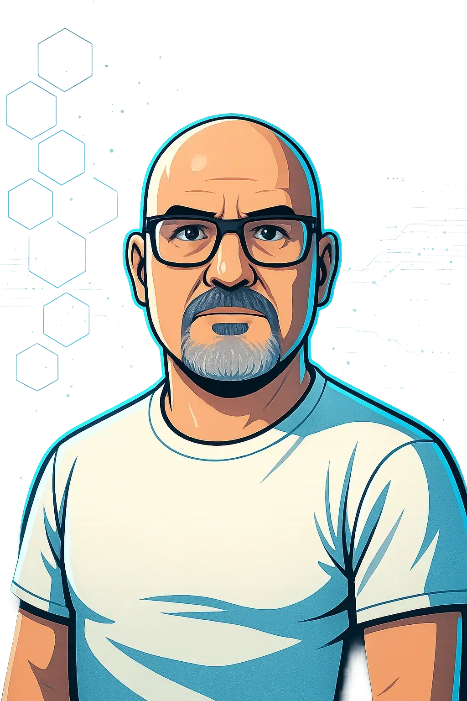

Service Desk and Endpoint Support
I frame intake, triage, user impact, Windows support, endpoint checks, escalation context, validation, and closure notes.
Enterprise Service Desk / IT Support / Systems Growth
I build and document practical support workflows across Windows, Microsoft 365, Active Directory fundamentals, endpoint support, networking, PowerShell, and infrastructure validation.

Portfolio Standard
I keep the public story concise and route technical reviewers to preserved diagrams, scripts, runbooks, validation records, resume files, and certification badge assets. Claims stay tied to artifacts and do not imply live infrastructure where the evidence is lab or methodology based.
Technical Focus
I frame intake, triage, user impact, Windows support, endpoint checks, escalation context, validation, and closure notes.
I document Microsoft 365 support exposure, Entra ID concepts, Active Directory fundamentals, Conditional Access intent, and endpoint policy planning.
I preserve DNS, DHCP, VLAN, firewall, VPN, and topology evidence with validation checklists and operational runbooks.
I connect reusable scripts to change records, dry-run review, logging expectations, rollback notes, and support handoff.
Featured Work
Projects stay short here and route to case studies or proof files for deeper review.

I document Microsoft 365 identity, endpoint policy, Conditional Access intent, rollback awareness, and validation planning with tenant-safe proof artifacts.

I document segmentation goals, VLAN boundaries, firewall policy intent, DNS/DHCP placement, VPN review, and validation checkpoints.

I preserve the home lab topology and use it to explain virtualization, lab boundaries, Windows and Linux workloads, and infrastructure review paths.
Certification Context
I surface existing badge assets as context only and avoid expanding claims beyond the available records.

Hardware, operating system, troubleshooting, ticket hygiene, and customer-facing support fundamentals.
Open badge asset
Server hardware, storage, virtualization, availability, and infrastructure maintenance concepts.
Open badge asset
Core terminology, systems concepts, security basics, and practical IT communication.
Open badge asset
Cloud models, identity-aware administration, governance basics, and Azure service categories.
Open badge asset
Routing, switching, subnetting, layered troubleshooting, and operational network documentation.
Open badge asset
Shell navigation, package awareness, permissions, services, logs, and cross-platform troubleshooting.
Open badge asset
Structured troubleshooting, operating systems, networking basics, security fundamentals, and support habits.
Open badge asset
TCP/IP, DNS, DHCP, subnetting, wireless concepts, and support-ready connectivity checks.
Open badge asset
Least privilege, authentication concepts, policy awareness, network boundaries, and secure support work.
Open badge asset
Windows Server roles, directory concepts, network services, and administration fundamentals.
Open badge asset{kind=link}